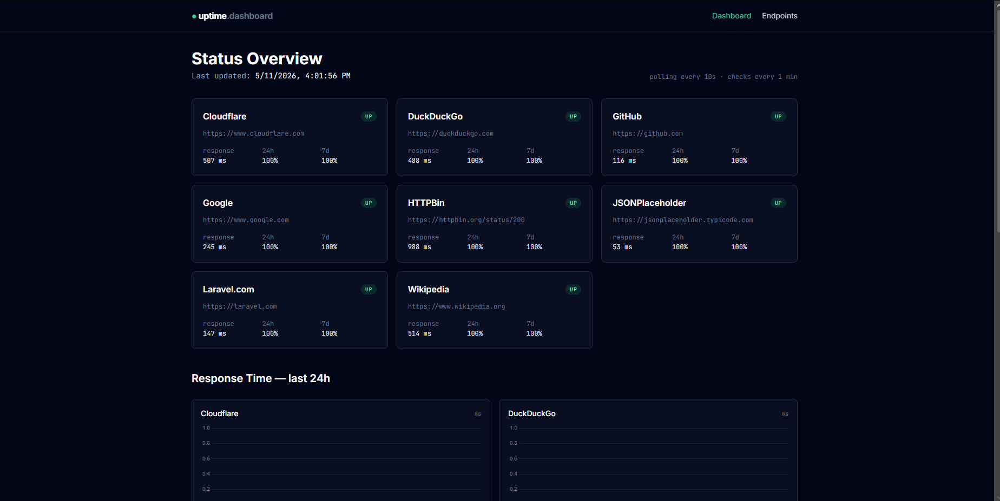
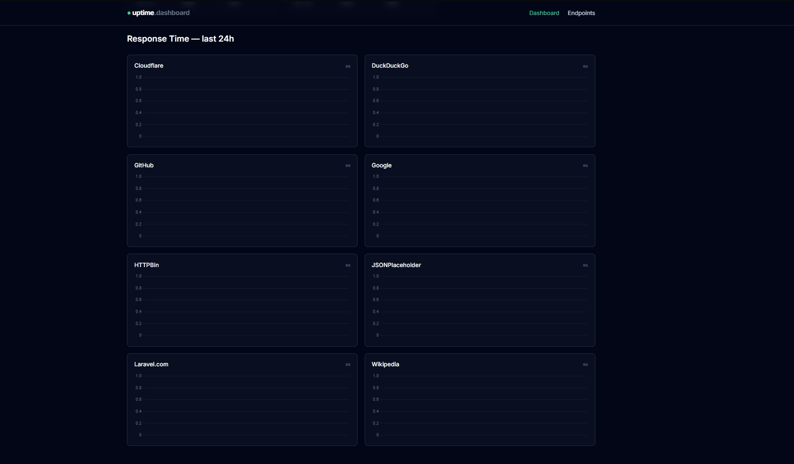
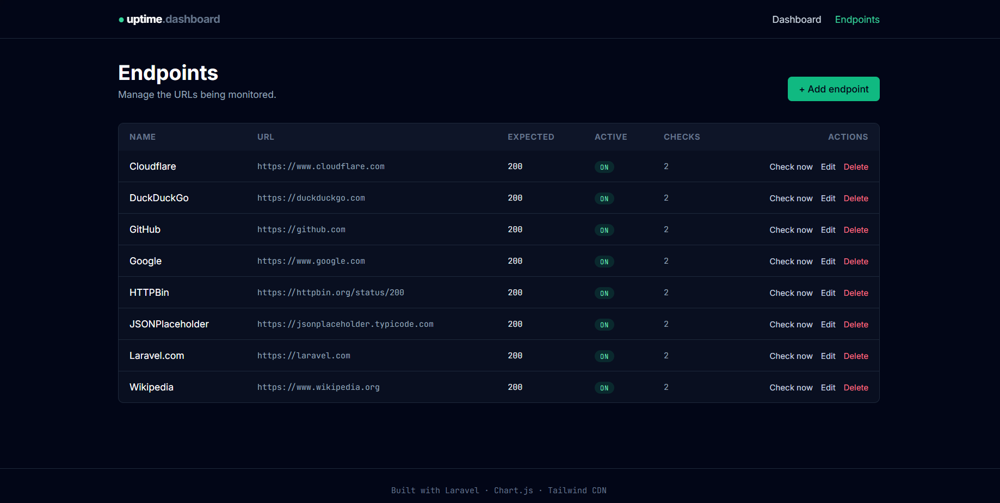
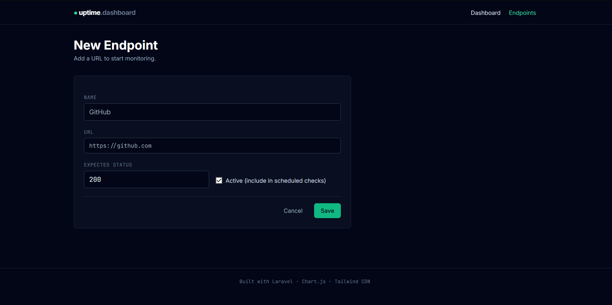

Uptime Dashboard
A Laravel 11 monitoring dashboard that pings a configurable list of URLs every minute, records response time and HTTP status, and visualizes everything with Chart.js. The frontend polls the backend every 10 seconds for live updates.




← scroll to see more →
Overview
I built this as a solo follow-up to a team bandwidth-monitoring project, same general shape (scheduled task → DB → live dashboard), but focused on API/website uptime instead of network throughput. You configure a list of endpoints to monitor, the scheduler hits each one every minute, and the dashboard surfaces current status, response-time history, uptime percentages, and a recent-incidents log.
Architecture
The data flow is intentionally simple, a single scheduled command writes, the dashboard polls a JSON endpoint to read:
[Scheduler] ──every 1 min──> [CheckEndpoints command] ──> [health_checks table]
│
[Browser] <──polls every 10s── [DashboardController@json] <─────┘
│
└─> renders Chart.js + status cards
Database Schema
Two tables, one foreign key:
- endpoints - id, name, url, expected_status, is_active, timestamps
- health_checks - id, endpoint_id (FK, cascadeOnDelete), response_time_ms, status_code, was_up, error_message, checked_at
Key Features
- Endpoint CRUD - add/edit/delete the URLs being monitored, toggle active state
- Scheduled checks - Laravel scheduler triggers
app:check-endpointsevery minute - Live status cards - UP/DOWN/UNKNOWN pills with last response time and 24h + 7d uptime percentages
- Response-time charts - Chart.js line chart per endpoint over the last 24h, fixed-height containers to prevent layout reflow
- Incidents table - failures from the last 24h with status code and error message
- Manual checks - a "Check now" button on each endpoint runs an out-of-band check via Artisan and reflects the result immediately
Technical Highlights
- Schedule with overlap protection - the every-minute job uses
withoutOverlapping(5)so a slow check can't double up if the previous one is still running - Resilient HTTP checks - Laravel HTTP client with configurable timeout, error capture stored on the row, and a custom user agent for politeness
- Frontend polling, not WebSockets - pragmatic choice: a 10-second poll on a small JSON endpoint is far simpler than setting up Laravel Reverb/Pusher and gives a "live" feel without the operational complexity
- Chart.js with
animation: 'none'on update - keeps the polling refresh smooth instead of replaying the line every 10s - Uptime calculation as a model helper -
$endpoint->uptimePercentage(24)works on any time window in hours - Foreign-key cascade - deleting an endpoint cleans up all its health checks atomically
- SQLite by default - zero-config local dev, but the connection swaps to MySQL/Postgres via one
.envchange